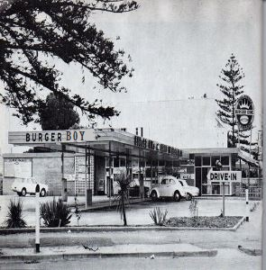

 Every day, more than 5 million guests visit BURGER BOY restaurants around the world. And they do so because our restaurants are known for serving high-quality, great tasting, and affordable food.Founded in 1960, BURGER BOY is the fourth largest fast food burger chain in the world.
BURGER BOY commenced operations in Malaysia in 2000 with the opening of its first restaurant at Sungai Buloh Overhead Bridge. Today, 3Y1S Restaurants Sdn Bhd operates more than 50 BURGER BOY restaurants in Malaysia where customers across the country can enjoy the great and healthy flame-grilled taste of BURGER BOY products.
BURGER BOY is America's favourite burger. First, off a hot broiler in 1961, the BURGER BOY, boasting a quarter pound of flame-grilled beef, ripe tomatoes, crisp lettuce, creamy mayo, ketchup, onions, and crunchy pickles on a toasted sesame seed bun, has become an iconic burger for the ages and boasts generations of fans worldwide.